In this workshop we will fit linear mixed-effects models to data in R. See the “Fit model” tab of the R tips page for help.
Linear models for mixed effects are implemented in the R
lme4 and lmerTest packages
(lmerTest includes lme4 plus additional
functions). An alternative option is to use the lme()
method in the nmle package. The methods used to calculate
approximate degrees of freedom in lme4 are a bit more
accurate than those used in the nmle package, especially
when sample size is not large.
These data set were extracted from a paper by Griffith and Sheldon (2001, Animal Behaviour 61: 987–993), who measured the size of the white forehead patch of 30 male collared flycatchers in two years on the Swedish island of Gotland. The patch is important in mate attraction, but varies in size from year to year. Our goal here will be to estimate the repeatability of patch length (mm). The data are here.
Read the data from the file.
View the first few lines of data to make sure it was read correctly.
Create a plot showing the pair of measurements for each individual flycatcher in the two years of study. Use a method appropriate for paired data. Do the measurements of individual birds vary between years? What might be the reasons?*
* Measurement error but also real year-to-year variation..
To estimate repeatability of forehead patch size, fit a linear mixed-effects model to the repeated measurements of individual birds. What are the random groups in this model?* Note: For simplicity, leave year out of the model. (If you include it, make sure to convert it to a character or factor in R so it is not treated as a numeric variable. The estimate of repeatability will be affected. Can you think of why?)
Extract parameter estimates (coefficients) from the saved
lmer() object (the command is the same one we used with
lm() to get the coefficients table). Inspect the output for
the random effects. Explain the two sources of random variation. What
does the fixed effect refer to?
In the output, examine the estimated components of variation. There should be two standard deviations: one for “(Intercept)” and one for “Residual”. This is because the mixed effects model has two sources of random variation: variation between the repeat measurements within birds, and variation among birds in their “true” patch lengths. Which of these two sources corresponds to “(Intercept)” and which to “Residual”?
Examine the output for the fixed effect results. The only fixed effect in the model formula is the grand mean of all the patch length measurements. It is called “(Intercept)”, but don’t confuse with the intercepts for the random groups. The fixed effect output gives you the estimate of the grand mean and a standard error for that estimate. Notice how the fixed effect output provides estimates of means, whereas the random effects output provides only estimates of variances (or standard deviations).
Extract the variance components from the fitted model and estimate the repeatability of patch length from year to year**.
Interpret the measure of repeatability obtained in the previous step. If the repeatability you obtained is less than 1.0, what is the source of the variation among measurements within individuals. Can we assume that it is measurement error alone?
Produce a plot of residuals against fitted values. Notice anything odd? There is a slightly positive trend. This isn’t a mistake, but results from “shrinkage” of the best linear unbiased predictors (BLUPs). Consult the lecture notes and the “Fit model” tab at the R tips pages (see the repeatability example under “Fit a linear mixed-effects model”) for additional information on what is happening.
* The individual birds. ** 0.776.
Read and examine the data.
library(visreg)
library(lmerTest)
library(ggplot2)
library(emmeans)
flycat <- read.csv(url("https://www.zoology.ubc.ca/~bio501/R/data/flycatcher.csv"))
head(flycat)## bird patch year
## 1 1 10.5 1998
## 2 2 10.6 1998
## 3 3 8.7 1998
## 4 4 8.6 1998
## 5 5 9.0 1998
## 6 6 9.3 1998These commands produce the type of dot plot I showed in class
stripchart(patch ~ bird, data = flycat, vertical = TRUE, pch = 16,
cex = 1.5, las = 2, col = "firebrick",
xlab = "Individual bird", ylab = "Patch length (mm)")
segments(x0 = flycat$bird[flycat$year == "1998"], y0 = flycat$patch[flycat$year == "1998"],
x1 = flycat$bird[flycat$year == "1999"], y1 = flycat$patch[flycat$year == "1999"],
lwd = 2)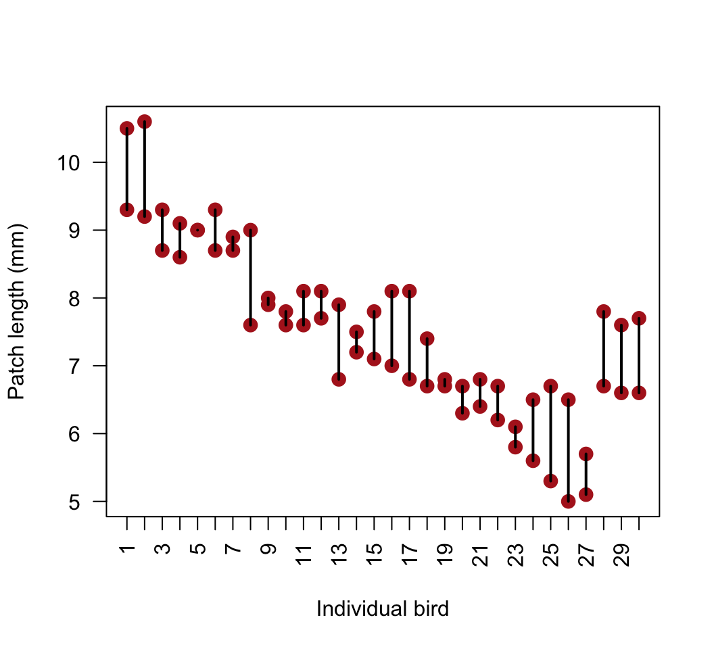
Or consider an interaction plot for pairs. Here’s the base R version.
interaction.plot(response = flycat$patch, x.factor = flycat$year,
trace.factor = flycat$bird, legend = FALSE, lty = 1, xlab = "Year",
ylab = "Patch length (mm)", type = "b", pch = 1, las = 1, cex = 1.5)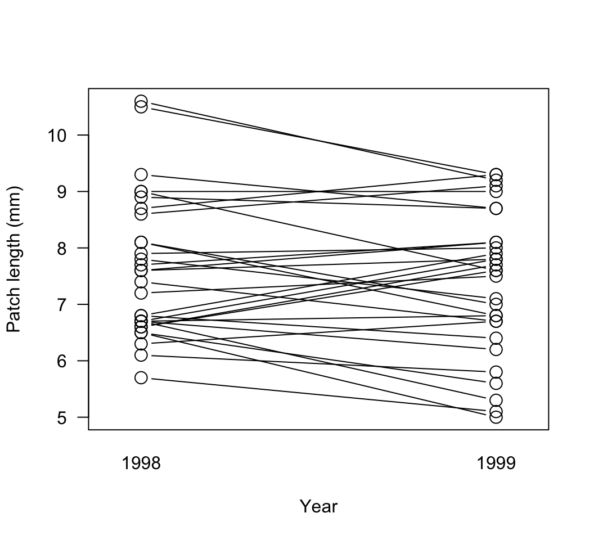
A ggplot() version.
ggplot(flycat, aes(y = patch, x = factor(year))) +
geom_point(size = 5, col = "firebrick", alpha = 0.5) +
geom_line(aes(group = bird)) +
labs(x = "Year", y = "Patch length (mm)") +
theme_classic()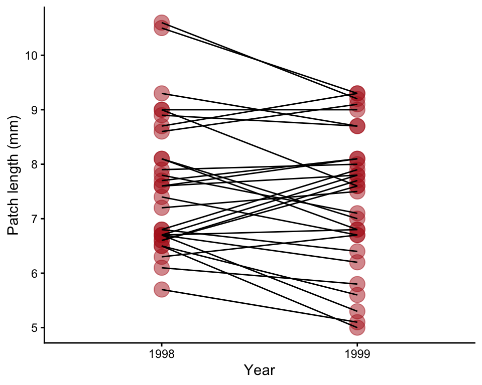
Fit a linear mixed effects model. The output from
summary() will show two sources of random variation:
variation among individual birds (bird Intercepts), and variation
between the repeat measurements made on the same birds in different
years (Residuals). An estimated variance and standard deviation are
given for each source. The fixed effect is just the mean of all birds —
another “Intercept”.
# 1. Mixed effects model
z <- lmer(patch ~ 1 + (1|bird), data = flycat)
# 2. Parameter estimates
summary(z)## Linear mixed model fit by REML. t-tests use Satterthwaite's method [
## lmerModLmerTest]
## Formula: patch ~ 1 + (1 | bird)
## Data: flycat
##
## REML criterion at convergence: 171
##
## Scaled residuals:
## Min 1Q Median 3Q Max
## -1.62368 -0.58351 0.03328 0.51009 1.67263
##
## Random effects:
## Groups Name Variance Std.Dev.
## bird (Intercept) 1.243 1.1150
## Residual 0.358 0.5983
## Number of obs: 60, groups: bird, 30
##
## Fixed effects:
## Estimate Std. Error df t value Pr(>|t|)
## (Intercept) 7.5100 0.2177 29.0000 34.49 <2e-16 ***
## ---
## Signif. codes: 0 '***' 0.001 '**' 0.01 '*' 0.05 '.' 0.1 ' ' 1# 5. Variance components and repeatability
v <- VarCorr(z)
v## Groups Name Std.Dev.
## bird (Intercept) 1.11504
## Residual 0.59833# Contents of v - the variances are in vcov
as.data.frame(v)## grp var1 var2 vcov sdcor
## 1 bird (Intercept) <NA> 1.24331 1.115038
## 2 Residual <NA> <NA> 0.35800 0.598331# Repeatability
vcov <- as.data.frame(v)$vcov
repeatability <- vcov[1] / (vcov[1] + vcov[2])
repeatability## [1] 0.7764331# 7. Plot of residuals against fitted values
plot(z)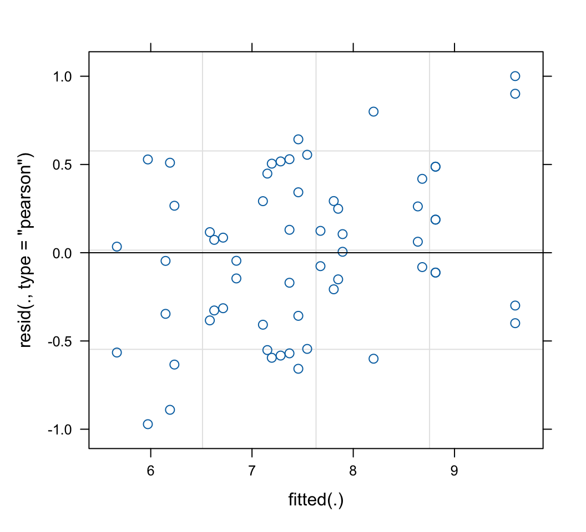
Cronly-Dillon and Muntz (1965; J. Exp. Biol 42: 481-493) used the optomotor response to measure color vision in the goldfish. We looked at a plot of some of these data already in lecture. Here we will fit a model to the data and include the full set of wavelengths tested. Each of 5 fish was tested at all the wavelength in random order. A large value of sensitivity indicates that the fish can detect the given wavelength at very dim light levels. A curious feature of the optomotor response is that fish don’t habituate, and so it is unlikely that a measurement of visual sensitivity under one wavelength would carry over and have an effect on later measurements at another wavelength. The data are here.
Read the data from the file, and view the first few lines to make sure it was read correctly.
Use an interaction plot to compare the responses of individual fish across the different light wavelength treatments.
What type of experimental design was used?*
* The design is sometimes called a “subjects-by-treatment” repeated measures design, since each fish is measured once under each treatment. It is essentially a randomized complete block design (think of the individual fish as “blocks”).
Fit a linear mixed-effects model to the data. R will give you the message: “boundary (singular) fit”. This happens to me sometimes when I try to fit a mixed effects model. The reason will become clearer below. Meantime, ignore the message and proceed with caution.
Plot the fit of the model to the data*. The difference between the fitted and observed values for each fish represent the residuals.
What assumptions are you making in (1)? Create a plot of residuals against fitted values to check one of these assumptions.
Extract parameter estimates from the saved lmer()
model object. Inspect the results for the fixed effects. The
coefficients given have the same interpretation as in the case of a
categorical variable analyzed using lm() (arbitrarily, the
light treatment “nm426” is set as the “control”).
Inspect the output for the random effects. Once again we have two
sources of random error in our mixed effects model. What are they? Which
of them corresponds to the (Intercept) and which to the
Residual in the output?** Notice that the estimated
standard deviation for one of the sources of variation is zero in this
data set. This is the reason behind the “boundary (singular) fit”
message. A true variance of 0 is not biologically realistic, but
estimates from samples can sometimes be 0 by chance (smapling error)
when sample size is small as in the present study. See point 8 below for
a solution.
Estimate the model-based mean sensitivity for each wavelength.
Are the differences among wavelengths significant? Generate the
ANOVA table for the lmer() object. What effects are tested
here, the random effects or the fixed effects?*** Interpret the ANOVA
results.
Estimates of variance can go to zero because of sampling error
when the number of groups is small, causing a “boundary (singular) fit”
error. Various solutions are possible, but an easy one is to use the
blmer() command in the blme package instead of
lmer(). The blmer() function behaves similarly
to lmer() but it incorporates a penalty on the variance in
the likelihood that reduces the chances that estimates will go to zero.
To try this you’ll have to install the blme package. When I
ran it on these data the results were almost identical. The estimated
variance among fish was small but not zero.
*visreg() is preferred, because both the data
and the fitted values are plotted. Note how the predicted values are
very similar between fish. This indicates that there was very little
estimated variance among individual fish in this study.
**One source is the variation among fish in their average sensitivity (random intercepts for fish). The other source is the variation among the repeated measurements made on the same fish at different wavelengths, relative to the mean sensitivity (residual variation).
***Generally, only the fixed effects are tested in an ANOVA table. It
is possible to test the null hypothesis of no variance in a random
effect using lmerTest, but I’ve yet to think of a
compelling reason why one would ever do this.
All lines below beginning with double hashes are R output
Read and examine the data.
x <- read.csv(url("https://www.zoology.ubc.ca/~bio501/R/data/goldfish.csv"))
head(x)## fish wavelength sensitivity
## 1 fish1 nm426 0.94
## 2 fish2 nm426 0.94
## 3 fish3 nm426 0.94
## 4 fish4 nm426 1.14
## 5 fish5 nm426 0.94
## 6 fish1 nm462 1.09Fit a linear mixed effects model.
The model assumes normally distributed residuals with equal variance for all fitted values. The method also assumes that the random intercepts among individual fish are normally distributed. The method assumes a random sample of groups (fish) and no carry-over between measurements made on the same fish.
# 1. Fit mixed effects model.
z <- lmer(sensitivity ~ wavelength + (1|fish), data = x)## boundary (singular) fit: see help('isSingular')# 2. This plots the fitted values separately for each fish.
visreg(z, xvar = "wavelength", by = "fish", scales = list(rot = 90))## boundary (singular) fit: see help('isSingular')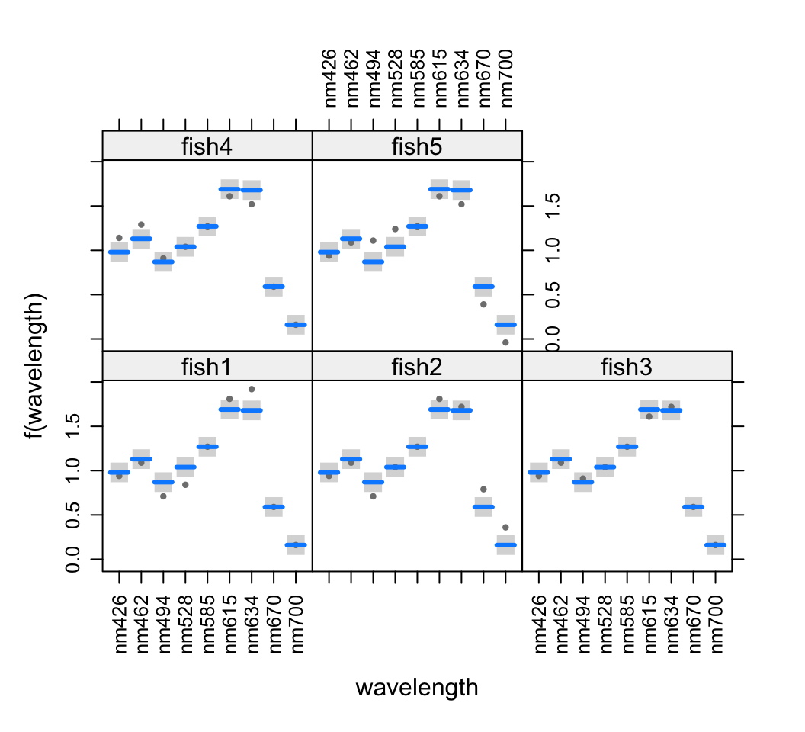
# 3. Test assumptions
plot(z)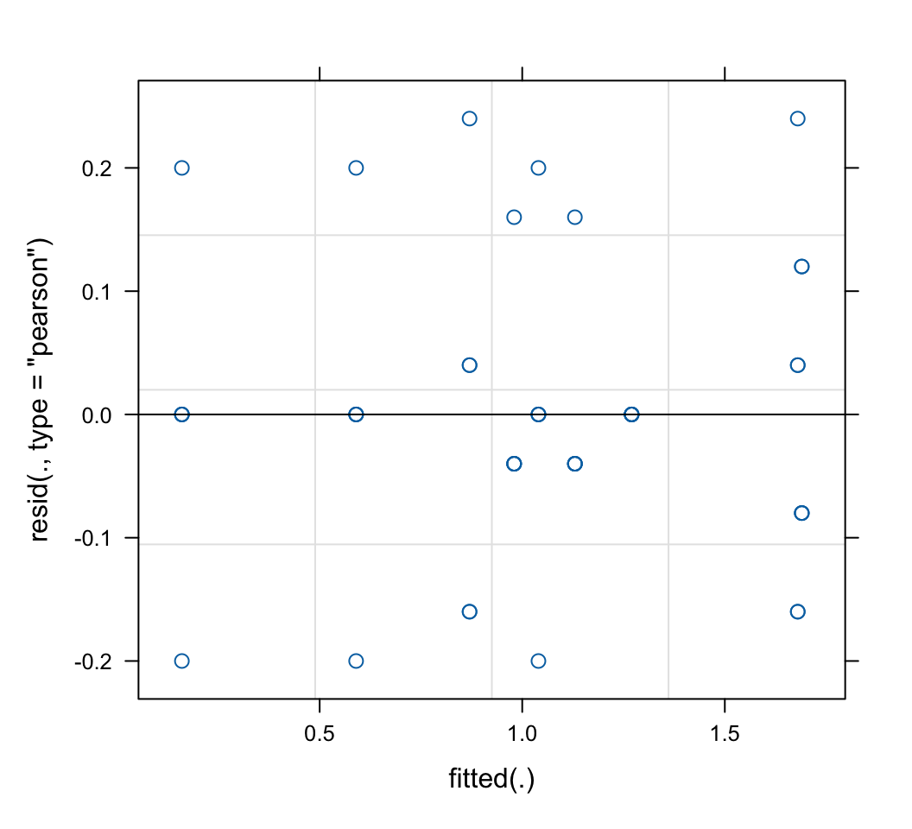
# 4. Extract parameter estimates
summary(z)## Linear mixed model fit by REML. t-tests use Satterthwaite's method [
## lmerModLmerTest]
## Formula: sensitivity ~ wavelength + (1 | fish)
## Data: x
##
## REML criterion at convergence: -32.2
##
## Scaled residuals:
## Min 1Q Median 3Q Max
## -1.5811 -0.3162 0.0000 0.3162 1.8974
##
## Random effects:
## Groups Name Variance Std.Dev.
## fish (Intercept) 0.000 0.0000
## Residual 0.016 0.1265
## Number of obs: 45, groups: fish, 5
##
## Fixed effects:
## Estimate Std. Error df t value Pr(>|t|)
## (Intercept) 0.98000 0.05657 36.00000 17.324 < 2e-16 ***
## wavelengthnm462 0.15000 0.08000 36.00000 1.875 0.068923 .
## wavelengthnm494 -0.11000 0.08000 36.00000 -1.375 0.177629
## wavelengthnm528 0.06000 0.08000 36.00000 0.750 0.458128
## wavelengthnm585 0.29000 0.08000 36.00000 3.625 0.000886 ***
## wavelengthnm615 0.71000 0.08000 36.00000 8.875 1.36e-10 ***
## wavelengthnm634 0.70000 0.08000 36.00000 8.750 1.94e-10 ***
## wavelengthnm670 -0.39000 0.08000 36.00000 -4.875 2.20e-05 ***
## wavelengthnm700 -0.82000 0.08000 36.00000 -10.250 3.20e-12 ***
## ---
## Signif. codes: 0 '***' 0.001 '**' 0.01 '*' 0.05 '.' 0.1 ' ' 1
##
## Correlation of Fixed Effects:
## (Intr) wvl462 wvl494 wvl528 wvl585 wvl615 wvl634 wvl670
## wvlngthn462 -0.707
## wvlngthn494 -0.707 0.500
## wvlngthn528 -0.707 0.500 0.500
## wvlngthn585 -0.707 0.500 0.500 0.500
## wvlngthn615 -0.707 0.500 0.500 0.500 0.500
## wvlngthn634 -0.707 0.500 0.500 0.500 0.500 0.500
## wvlngthn670 -0.707 0.500 0.500 0.500 0.500 0.500 0.500
## wvlngthn700 -0.707 0.500 0.500 0.500 0.500 0.500 0.500 0.500
## optimizer (nloptwrap) convergence code: 0 (OK)
## boundary (singular) fit: see help('isSingular')# 6. Model-based estimates of the mean sensitivities
emmeans(z, "wavelength", data = x)## wavelength emmean SE df lower.CL upper.CL
## nm426 0.98 0.0566 36 0.8653 1.095
## nm462 1.13 0.0566 36 1.0153 1.245
## nm494 0.87 0.0566 36 0.7553 0.985
## nm528 1.04 0.0566 36 0.9253 1.155
## nm585 1.27 0.0566 36 1.1553 1.385
## nm615 1.69 0.0566 36 1.5753 1.805
## nm634 1.68 0.0566 36 1.5653 1.795
## nm670 0.59 0.0566 36 0.4753 0.705
## nm700 0.16 0.0566 36 0.0453 0.275
##
## Degrees-of-freedom method: kenward-roger
## Confidence level used: 0.95# 7. ANOVA
anova(z)## Type III Analysis of Variance Table with Satterthwaite's method
## Sum Sq Mean Sq NumDF DenDF F value Pr(>F)
## wavelength 9.5111 1.1889 8 36 74.306 < 2.2e-16 ***
## ---
## Signif. codes: 0 '***' 0.001 '**' 0.01 '*' 0.05 '.' 0.1 ' ' 1# 8. Here's what the results look like with the blmer analysis.
# Notice the slight change in the variance estimates.
library(blme)
z <- blmer(sensitivity ~ wavelength + (1|fish), data = x)
summary(z)## Cov prior : fish ~ wishart(df = 3.5, scale = Inf, posterior.scale = cov, common.scale = TRUE)
## Prior dev : 3.4966
##
## Linear mixed model fit by REML ['blmerMod']
## Formula: sensitivity ~ wavelength + (1 | fish)
## Data: x
##
## REML criterion at convergence: -30.4
##
## Scaled residuals:
## Min 1Q Median 3Q Max
## -1.56305 -0.45163 -0.04965 0.26958 2.03123
##
## Random effects:
## Groups Name Variance Std.Dev.
## fish (Intercept) 0.001526 0.03906
## Residual 0.015700 0.12530
## Number of obs: 45, groups: fish, 5
##
## Fixed effects:
## Estimate Std. Error t value
## (Intercept) 0.98000 0.05870 16.696
## wavelengthnm462 0.15000 0.07925 1.893
## wavelengthnm494 -0.11000 0.07925 -1.388
## wavelengthnm528 0.06000 0.07925 0.757
## wavelengthnm585 0.29000 0.07925 3.659
## wavelengthnm615 0.71000 0.07925 8.959
## wavelengthnm634 0.70000 0.07925 8.833
## wavelengthnm670 -0.39000 0.07925 -4.921
## wavelengthnm700 -0.82000 0.07925 -10.347
##
## Correlation of Fixed Effects:
## (Intr) wvl462 wvl494 wvl528 wvl585 wvl615 wvl634 wvl670
## wvlngthn462 -0.675
## wvlngthn494 -0.675 0.500
## wvlngthn528 -0.675 0.500 0.500
## wvlngthn585 -0.675 0.500 0.500 0.500
## wvlngthn615 -0.675 0.500 0.500 0.500 0.500
## wvlngthn634 -0.675 0.500 0.500 0.500 0.500 0.500
## wvlngthn670 -0.675 0.500 0.500 0.500 0.500 0.500 0.500
## wvlngthn700 -0.675 0.500 0.500 0.500 0.500 0.500 0.500 0.500The Kluane project experimentally investigated the effects of fertilization and herbivory on vegetation dynamics in the boreal forest ecosystem of Kluane National Park in the Yukon (Krebs, C.J., Boutin, S. & Boonstra, R., eds (2001a) Ecosystem dynamics of the Boreal Forest. The Kluane Project. Oxford University Press, New York). The current data are from a study of the effects of plant resources and herbivory on the defensive chemistry of understory plant species.
Each of sixteen 5x5 m plots was randomly assigned one of four treatments: 1) surrounded by a fence exclosure to exclude herbivores; 2) fertilized with N-P-K fertilizer; 3) fenced and fertilized; and 4) untreated control. Each of the 16 plots was then divided in two. One side of each plot (randomly chosen) received the treatment continually over the 20 years of study. The other half of each plot received the treatment for the first ten years, after which it was left to revert to its untreated state. The data to be analyzed here record the concentration of phenolics (a crude measure of plant defense compounds) in yarrow (Achillea millefolium), a herb common in the plots. The measurement units are mg Tannic Acid Equivalents per g dry weight. The data were kindly provided by P. de Koning and R. Turkington. The data are here.
Read the data from the file.
Inspect the first few lines of data. Plot and treatment are
self-explanatory. Treatment is given as a single variable with four
levels (let’s stick with this approach rather than model as two
variables, enclosure and fertilizer, with a 2x2 factorial design).
Duration indicates whether the half-plots received the treatment for the
full 20 years or whether the treatment was stopped (“reversed”) after 10
years. The variable phen.ach is the concentration of
phenolics in yarrow.
Draw a graph to illustrate the concentrations of phenolics in yarrow in the different treatment and duration categories. There aren’t many data points in each combination of treatment and duration levels, so a strip chart by groups is probably a better choice than a box plot by groups (see “Graphs & Tables” page of R tips). Can you create a plot that indicates the pairing between plot-halves?
Read and examine the data.
A good strategy is to order the treatment categories to put controls first. This will make the output from the linear model fit more useful.
# 1. read data
x <- read.csv(url("https://www.zoology.ubc.ca/~bio501/R/data/kluane.csv"))
# 2. Inspect
head(x)## plot treatment duration phen.ach
## 1 1 control permanent 43.97
## 2 1 control reverse 36.50
## 3 2 fertilizer permanent 14.21
## 4 2 fertilizer reverse 28.64
## 5 3 control permanent 42.38
## 6 3 control reverse 44.44A strip chart is reasonable (there aren’t many data points) but it doesn’t indicate the pairing between plot-halves.
A good strategy is to order the treatment categories to put controls first. This will make the output from the linear model fit more useful.
# First, reorder treatment categories
x$treatment <- factor(x$treatment,levels=c("control","exclosure","fertilizer","both"))
# 3. Grouped strip chart
ggplot(data = x, aes(y = log(phen.ach), x = treatment, fill = duration, color = duration)) +
geom_point(size = 3, position = position_dodge(width = 0.7)) +
labs(x = "Treatment", y = "log phenolics concentration") +
theme_classic()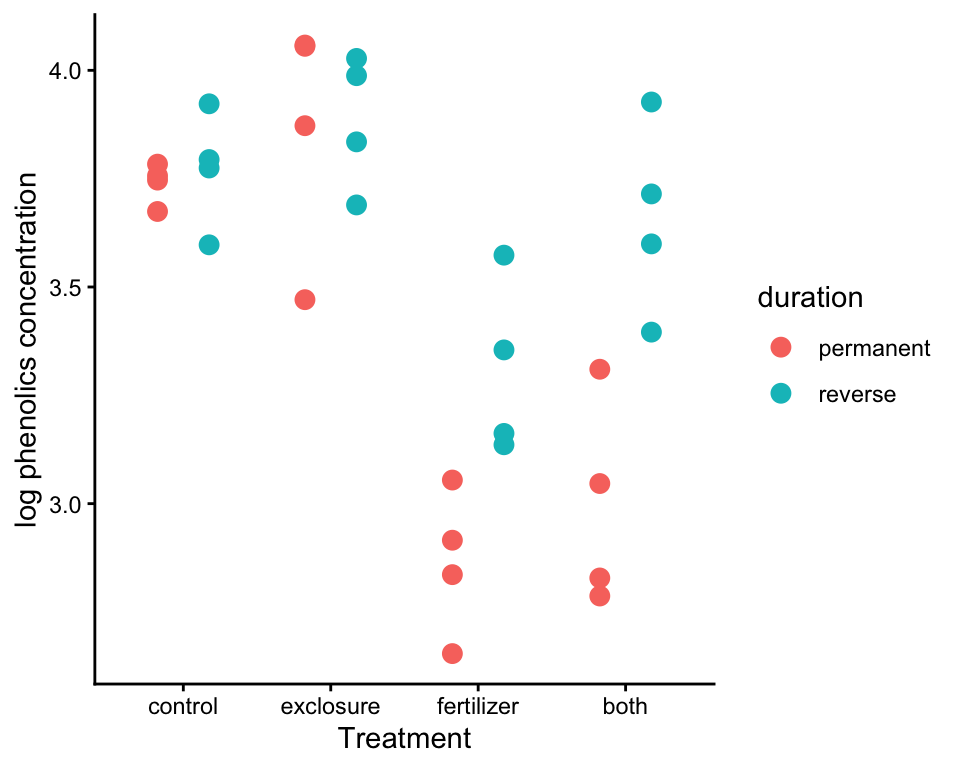
To indicate the pairing, use facet_wrap() to make a
multi-panel plot of paired data that looks like a unified single
plot.
# 4. A plot that preserves the pairing
ggplot(data = x, aes(y = log(phen.ach), x = duration, fill = duration, color = duration)) +
geom_line(aes(group = plot), col = "black") +
geom_point(size = 3, position = position_dodge(width = 0.7), show.legend = FALSE) +
facet_wrap(~ treatment, nrow = 1) +
labs(x = "Treatment", y = "log phenolics concentration") +
theme(aspect.ratio = 2)+
theme_classic()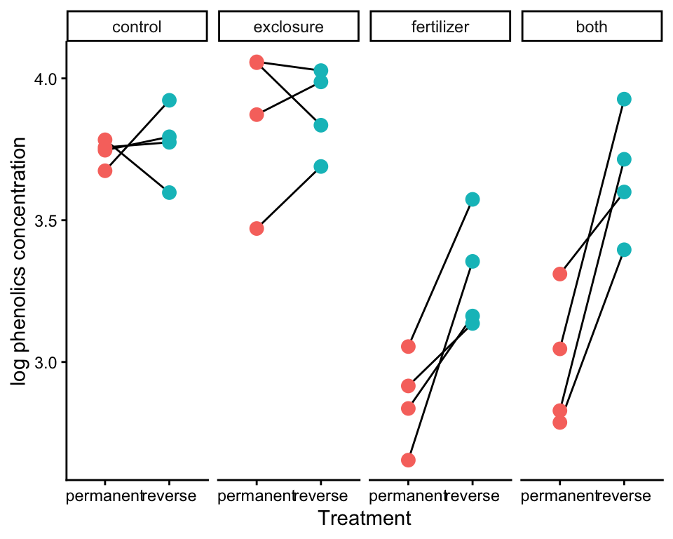
//: –>What type of experimental design was used?*
Fit a linear mixed model to the data without an interaction between treatment and duration. Use the log of phenolics as the response variable, as the log-transformation improved the fit of the data to linear model assumptions. For our purposes here, ignore the error message “boundary (singular) fit: see help(‘isSingular’)”.
Visualize the model fit to the data. Use the by =
argument with visreg() to separate panels by duration (if
xvar is treatment) or treatment (if xvar is
duration). visreg() won’t preserve the pairing, but will
allow you to inspect residuals.
Now repeat the model fitting, but this time include the interaction between treatment and duration. Visualize the model fit to the data. What is the most noticeable difference between the two model fits, one with the interaction and the other without? Describe what including the interaction term “allows” that the model without an interaction term does not. Judging by eye, which model appears to fit the data best?
Use the diagnostic plot to check a key assumption of linear mixed models for the model including the interaction term.
Estimate the parameters of the linear model (including
interaction) using the fitted model object. Notice that there are now
many coefficients in the table of fixed effects. In principle, these can
be understood by examining how R models terms behind the scenes, but the
task is made more challenging with two factors and an interaction. It
might be more useful to use emmeans() instead to obtain
model fitted means, which are more readily interpretable.
In the output from the previous step, you will see two quantities given for “Std.Dev” under the label “Random effects”. Explain what these quantities refer to.
Use emmeans() to estimate the model fitted means for
all combinations of the fixed effects.
Generate the ANOVA table for the fixed effects. Which terms were statistically significant?
Notice that, by default, lmerTest will test model
terms using Type 3 sums of squares (the “drop one” approach) rather than
sequentially (Type 1), which is the default in lm(). (Why
can’t statisticians all get together and come to a consensus?) Repeat
the ANOVA table using Type 1 instead. Are the results any
different?**
*The experiment used a split-plot design, in which whole plots were randomly assigned different treatments, and then different levels of a second treatment (duration) were assigned to plot halves.
**There should be no difference because the design is completely balanced.
The fixed effects are treatment and
duration, whereas plot is the random effect.
When fitting an interaction, the magnitudes of differences between
treatment levels can differ between duration levels.
Because a random effect is also present (plot), the coefficients table will show estimates of variance for two sources of random variation. One is the variance of the residuals of the fitted model. The second is the variance among the (random) plot intercepts.
# 2. Fit mixed effects model - no interaction
z <- lmer(log(phen.ach) ~ treatment + duration + (1|plot), data=x)## boundary (singular) fit: see help('isSingular')# 3. Visualize. I used a two-panel plot
visreg(z, xvar = "treatment", by = "duration", overlay = TRUE,
ylab="Log phenolics concentration", data = x)## boundary (singular) fit: see help('isSingular')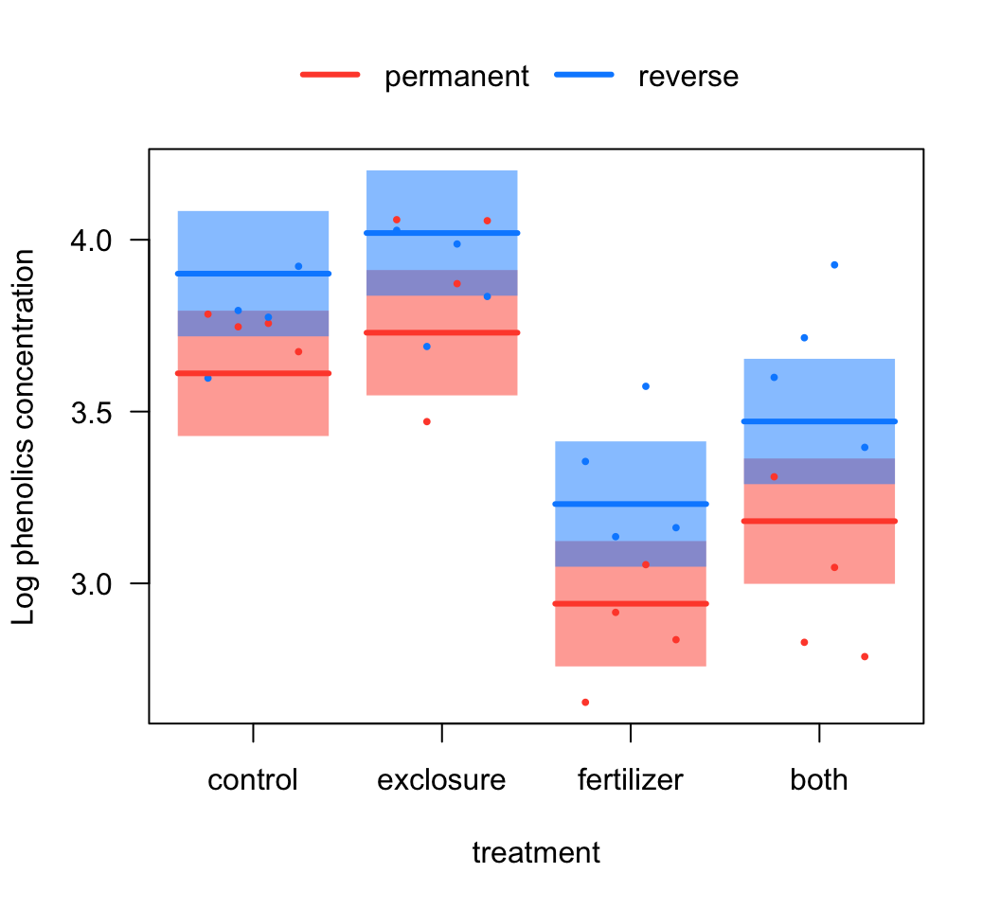
# 4. Include interaction and visualize again
z.int <- lmer(log(phen.ach) ~ treatment * duration + (1|plot), data=x)
visreg(z.int, xvar = "treatment", by = "duration", overlay = TRUE,
ylab="Log phenolics concentration", data = x)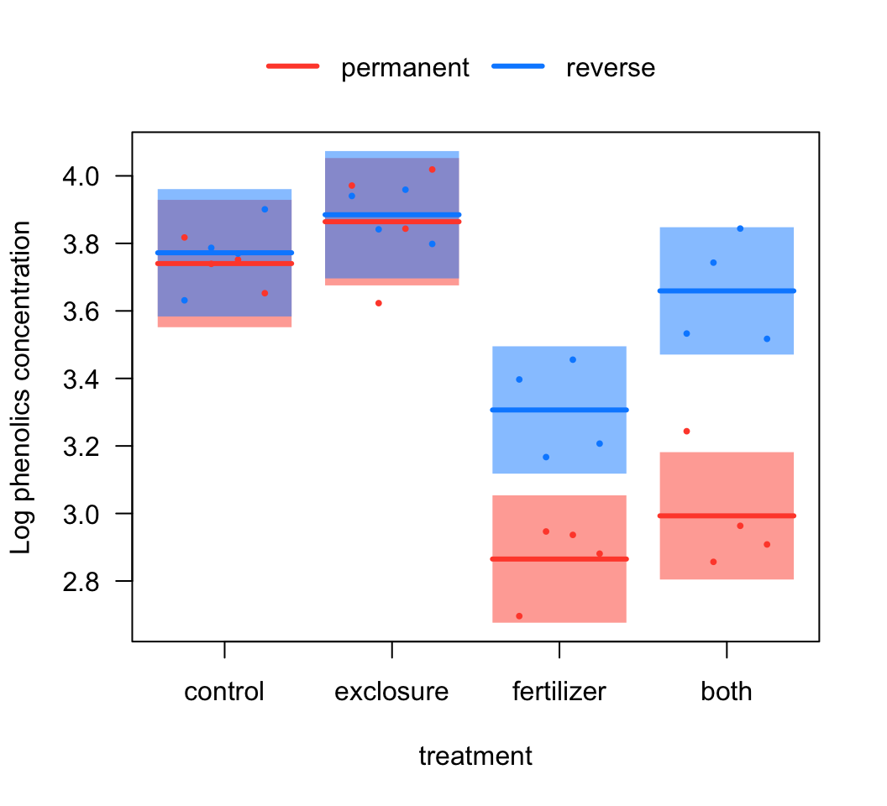
# 5. Plot to test homogeneity of variances (and normality, to some extent).
plot(z.int)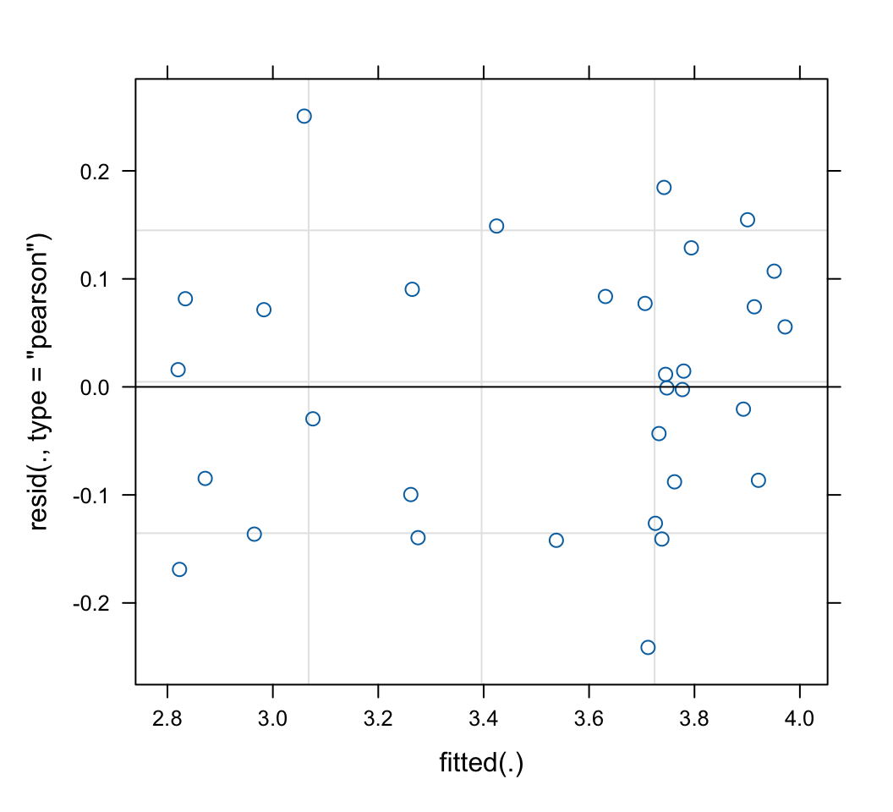
# 6. Coefficients
summary(z.int)## Linear mixed model fit by REML. t-tests use Satterthwaite's method [
## lmerModLmerTest]
## Formula: log(phen.ach) ~ treatment * duration + (1 | plot)
## Data: x
##
## REML criterion at convergence: -1.4
##
## Scaled residuals:
## Min 1Q Median 3Q Max
## -1.55278 -0.58471 0.03425 0.52871 1.61347
##
## Random effects:
## Groups Name Variance Std.Dev.
## plot (Intercept) 0.01292 0.1137
## Residual 0.02413 0.1553
## Number of obs: 32, groups: plot, 16
##
## Fixed effects:
## Estimate Std. Error df t value
## (Intercept) 3.74031 0.09624 21.39871 38.865
## treatmentexclosure 0.12388 0.13610 21.39871 0.910
## treatmentfertilizer -0.87526 0.13610 21.39871 -6.431
## treatmentboth -0.74732 0.13610 21.39871 -5.491
## durationreverse 0.03190 0.10984 12.00000 0.290
## treatmentexclosure:durationreverse -0.01122 0.15534 12.00000 -0.072
## treatmentfertilizer:durationreverse 0.40963 0.15534 12.00000 2.637
## treatmentboth:durationreverse 0.63438 0.15534 12.00000 4.084
## Pr(>|t|)
## (Intercept) < 2e-16 ***
## treatmentexclosure 0.37284
## treatmentfertilizer 2.06e-06 ***
## treatmentboth 1.78e-05 ***
## durationreverse 0.77648
## treatmentexclosure:durationreverse 0.94362
## treatmentfertilizer:durationreverse 0.02169 *
## treatmentboth:durationreverse 0.00152 **
## ---
## Signif. codes: 0 '***' 0.001 '**' 0.01 '*' 0.05 '.' 0.1 ' ' 1
##
## Correlation of Fixed Effects:
## (Intr) trtmntx trtmntf trtmntb drtnrv trtmntx: trtmntf:
## trtmntxclsr -0.707
## trtmntfrtlz -0.707 0.500
## treatmntbth -0.707 0.500 0.500
## duratinrvrs -0.571 0.404 0.404 0.404
## trtmntxcls: 0.404 -0.571 -0.285 -0.285 -0.707
## trtmntfrtl: 0.404 -0.285 -0.571 -0.285 -0.707 0.500
## trtmntbth:d 0.404 -0.285 -0.285 -0.571 -0.707 0.500 0.500# 8. Model fitted means
emmeans(z.int, specs = c("treatment", "duration"), data = x)## treatment duration emmean SE df lower.CL upper.CL
## control permanent 3.74 0.0962 21.4 3.54 3.94
## exclosure permanent 3.86 0.0962 21.4 3.66 4.06
## fertilizer permanent 2.87 0.0962 21.4 2.67 3.06
## both permanent 2.99 0.0962 21.4 2.79 3.19
## control reverse 3.77 0.0962 21.4 3.57 3.97
## exclosure reverse 3.88 0.0962 21.4 3.68 4.08
## fertilizer reverse 3.31 0.0962 21.4 3.11 3.51
## both reverse 3.66 0.0962 21.4 3.46 3.86
##
## Degrees-of-freedom method: kenward-roger
## Results are given on the log (not the response) scale.
## Confidence level used: 0.95# 9. ANOVA tables
anova(z.int) # Type 3 sums of squares is default in lmerTest## Type III Analysis of Variance Table with Satterthwaite's method
## Sum Sq Mean Sq NumDF DenDF F value Pr(>F)
## treatment 1.57355 0.52452 3 12 21.7365 3.848e-05 ***
## duration 0.67324 0.67324 1 12 27.8998 0.000194 ***
## treatment:duration 0.60739 0.20246 3 12 8.3903 0.002822 **
## ---
## Signif. codes: 0 '***' 0.001 '**' 0.01 '*' 0.05 '.' 0.1 ' ' 1# 10. Type 1 instead
anova(z.int, type = 1)## Type I Analysis of Variance Table with Satterthwaite's method
## Sum Sq Mean Sq NumDF DenDF F value Pr(>F)
## treatment 1.57355 0.52452 3 12 21.7365 3.848e-05 ***
## duration 0.67324 0.67324 1 12 27.8998 0.000194 ***
## treatment:duration 0.60739 0.20246 3 12 8.3903 0.002822 **
## ---
## Signif. codes: 0 '***' 0.001 '**' 0.01 '*' 0.05 '.' 0.1 ' ' 1© 2009-2026 Dolph Schluter